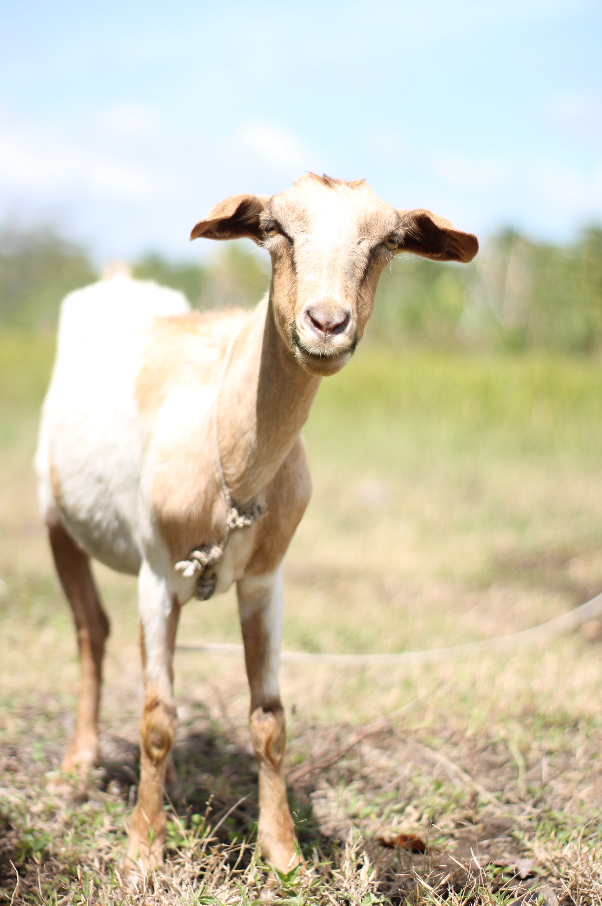

Goats are reputed to be willing to eat almost anything, including tin cans and cardboard boxes. While goats will not actually eat inedible material, they are browsing animals, not grazers like cattle and sheep, and (coupled with their highly curious nature) will chew on and taste just about anything remotely resembling plant matter to decide whether it is good to eat, including cardboard, clothing and paper (such as labels from tin cans).